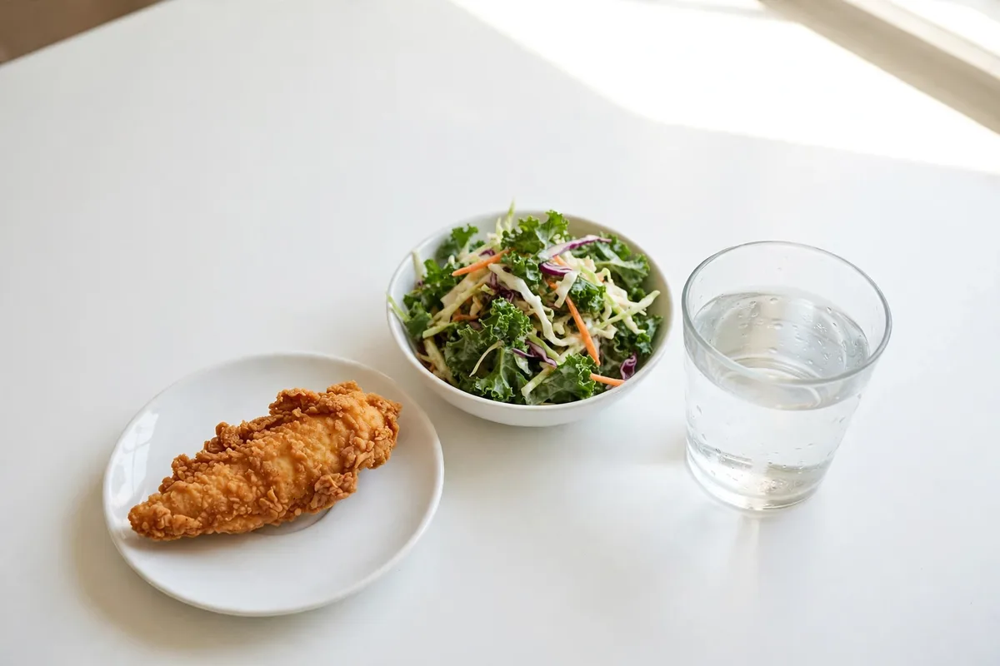
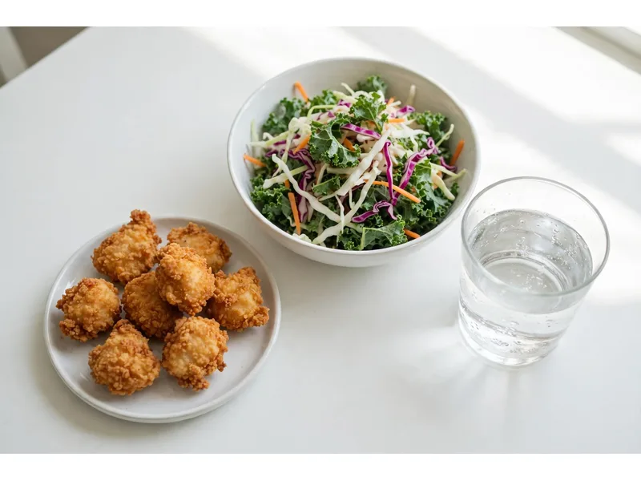
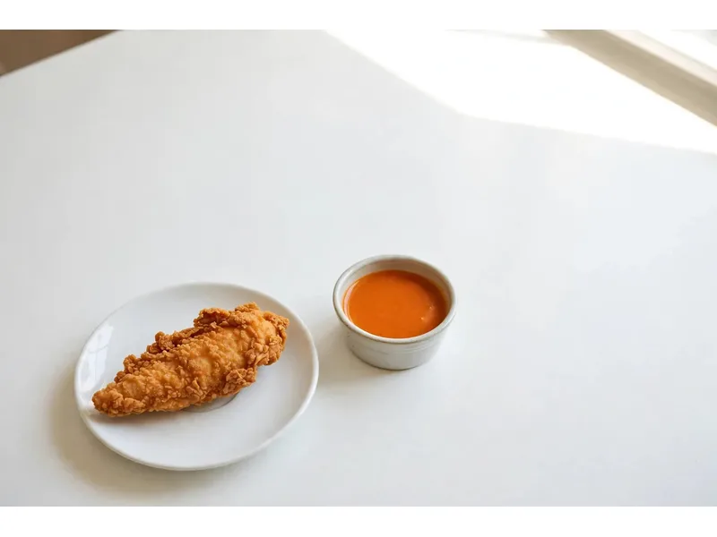

Is Dave's Hot Chicken Healthy?
Is Dave's Hot Chicken healthy? The short answer hides the useful one — and the chart tells a different story by item. Is Dave's Hot Chicken healthy by the standards of a health food? It is breaded, deep-fried chicken with a mayo-based sauce, and the 2026 nutrition chart puts a single tender at 490 to 550 calories and up to 1,480mg of sodium, about 64 percent of a day's 2,300mg guideline in one piece. But the same chart shows why the question refuses to die: the protein is genuinely high for fast food (25 to 68 grams an order), nothing on the menu is a mystery, and four orders land under 1,000 calories. This post runs the verdict off the chart itself, corrects the estimated numbers the top search results run on, and ranks the lightest orders Dave's sells.

Verdict from Dave's own 2026 chart4 orders under 1,000 caloriesThe Verdict First: Indulgence, With a Working Light End
Is Dave's Hot Chicken healthy? As a category, no: it is fried chicken, and the chart says so in sodium before it says it in calories. As an order, it depends entirely on which corner of the menu you stand in, because the chart's spread is enormous:
| Order (2026 chart) | Calories | Protein | Sodium |
|---|---|---|---|
| 10 pc Dave's Bites, no fries | 650-750 | 41g | 1,570-2,000mg |
| Single Tender | 490-550 | 25g | 1,210-1,480mg |
| Dave's #5 combo | 930-990 | 31g | 2,410-2,680mg |
| Dave's #1 combo | 1,230-1,350 | 56g | 3,080-3,630mg |
| Dave's #2 combo | 1,500-1,620 | 68g | 3,340mg+ |
Read the table as the whole argument. The same kitchen produces a 650-calorie, 41-gram-protein meal and a combo whose sodium alone passes a full day's guideline before the drink arrives. Is Dave's Hot Chicken healthy is not a yes-or-no question; it is a which-one question. The sections below pull the two sides apart, then rank the orders that land on the right side of the line.
Why Dave's Isn't a Health Food
Three structural reasons, all visible in the numbers: the cooking method, the sodium, and the extras that hitchhike on every combo.
Breading and frying set the floor. Everything core at Dave's is breaded and deep-fried, chicken and cauliflower alike, and there is no grilled option anywhere on the menu to escape to. That is why a single tender, the leanest piece of chicken on the menu, still starts at 490 calories. Every is Dave's Hot Chicken healthy argument starts from that floor. Some estimates soften this (a tender at 250 to 300 calories circulates); the chart says 490 to 550, and this Dave's Hot Chicken healthy verdict runs on the chart, not the estimate. A Dave's Hot Chicken slider's bun then adds about 130 calories and 11 grams of carbs over the tender, taking it to 620 to 680.
Sodium is the real problem, ahead of calories. A tender at the hot end of its range carries 1,480mg, roughly 64 percent of the 2,300mg daily guideline. A #5 combo lands at 2,410 to 2,680mg, over the whole day; a #1 reaches 3,630mg, a day and a half. Even a side of fries brings 1,200mg of its own. Calories can be budgeted around for the rest of the day; a sodium load like that cannot be un-eaten. The is Dave's Hot Chicken healthy debate fixates on calories; the chart says the sodium is the heavier charge.
The extras are where orders go to die. Dave's Sauce is 150 calories a packet and 760 in the 4 oz large, pure added fat. Shakes are not on the 2026 chart at all, but Dave's earlier chart put a regular at 740 to 760 calories, more than the chicken in a #5. And the popular wisdom that the kale slaw is the light side survives contact with the chart poorly: it is genuinely the lowest-sodium side (170mg against the fries' 1,200mg), but at 270 calories and 26 grams of fat it is a dressed, mayo-based side, not a salad.
The Case For Dave's: the Protein Is Real
The honest counterweight, and the reason Is Dave's Hot Chicken healthy keeps being asked instead of laughed off: per order, Dave's delivers more protein than almost anything in its fast-food lane.
The 10 pc Bites are the standout: 650 to 750 calories carrying 41 grams of protein, the best protein-per-calorie ratio on the chart at roughly 5.9 grams per 100 calories. A tender gives 25 grams, a slider 31, and the big combos run 56 to 68 grams, figures a lot of sit-down chicken dishes do not reach. One correction belongs here too: a claim that a tender carries 37 grams of protein circulates on guide sites; the chart says 25, and the difference matters to anyone logging it. For a high-protein target, Dave's is not a cheat that happens to have protein; ordered from the light end, it is a legitimate protein source that happens to be fried. Is Dave's Hot Chicken healthy? Not as a habit, no. As a protein delivery system you steer carefully, the chart backs it.

Dave's Hot Chicken Healthy Options, Ranked
The Dave's Hot Chicken healthy options, ranked by calories from the chart, with the protein kept in view because a light order that leaves you hungry is a snack wearing a costume: the answer to is Dave's Hot Chicken healthy, in orders instead of adjectives.
| # | Order | Calories | Protein | The catch |
|---|---|---|---|---|
| 1 | 10 pc Dave's Bites, no fries | 650-750 | 41g | Sodium still 1,570-2,000mg |
| 2 | Single Tender + Kale Slaw | ~760-820 | 27g | Total is chart arithmetic: 490-550 + 270 |
| 3 | Not Chicken #5 (cauliflower combo) | 790-830 | 8g | Lightest combo on the chart; protein collapses |
| 4 | Dave's #5 combo | 930-990 | 31g | The only chicken combo under 1,000 cal; sodium 2,410-2,680mg |
Two honourable mentions with warnings attached. The single lowest-calorie item on the whole chart is one piece of Hot Mozz at 420 to 430 calories, but at 5 grams of protein it is a side pretending to be a meal. And the Cauli Bites (490 to 590 calories) quietly hold the menu's lowest sodium range of any main, 310 to 760mg, which makes them the one order a sodium-watcher can eat without doing maths first. However the question is typed, Dave's Hot Chicken is it healthy or the other way round, ask is Dave's Hot Chicken healthy at the counter and these four rows are the strongest answer the menu can give.
Swaps That Actually Save Calories
Small, specific, chart-priced. Each swap below is a decision you can make at the till without changing restaurants. None of them turns the answer to is Dave's Hot Chicken healthy into a yes; together they move an order several hundred calories in the right direction.
440 down to 270, and the bigger win is sodium: 1,200mg down to 170mg. The slaw is not light (26g fat), merely lighter; take the swap for the sodium alone.
Dave's Sauce packet is 150 calories; the spicy buffalo side dip is 25 and the spicy BBQ is 70. Same dip habit, a fifth of the cost. The 4 oz Dave's Sauce at 760 is the single easiest skip on the menu.
The chart's ranges are spice ranges: hotter tiers add about 60 calories to a tender or slider, 100 to the Bites and 120 to a #1, from the chilli oil. Guides claiming spice changes nothing are contradicting the chart. Mild still tastes like Dave's; the saving is real either way.
Shakes sit off the 2026 chart, but Dave's earlier chart listed a regular at 740 to 760 calories, more than the chicken in a #5 combo. Water or a fountain drink turns a 1,700-calorie outing back into a 950 one.

Is the Cauliflower Healthier?
By calories and sodium, yes. By protein and staying power, it is not close, and an Is Dave's Hot Chicken healthy answer that hides either half is selling something.
The Not Chicken numbers: a Cauli Slider runs 490 to 520 calories against the chicken slider's 620 to 680; Cauli Bites run 490 to 590 against 650 to 750; and the Not Chicken #5 at 790 to 830 is the lightest combo on the entire chart, undercutting the chicken #5 by about 140 calories. Its sodium can be the menu's lowest, too. The cost is protein: 8 grams where the chicken gives 25 to 31, because breaded cauliflower is a vegetable in a coat, not a protein source. It is also the same wheat breading fried in the same kitchen, which is why it is a lighter option and not a gluten free one (the gluten free guide covers that trap in full). On the narrow question, is Dave's Hot Chicken healthy in its cauliflower form, the answer is: the right order when calories or sodium are the day's problem, and the wrong one when the meal has to keep you full until dinner.
Fitting Dave's Into a Calorie Budget
Healthy is a day-level word, which is why is Dave's Hot Chicken healthy has no single answer. The same order is a fine lunch inside one budget and the whole problem inside another.
The Bites (650-750) take about half the day and leave room for two light meals. A #5 (930-990) takes two-thirds. Anything above the #5 ends the discussion; the day is spent.
The natural Dave's zone. A #5 sits under half the budget, the Bites under 40 percent, and even a #1 (1,230-1,350) fits the calories. Its sodium, 3,080-3,630mg, still blows the day's 2,300mg guideline on its own.
Everything fits by calories, including the #2 at 1,500-1,620 with a drink. At this budget the constraint stops being energy and stays what it always was at Dave's: sodium and how often.
And the forum version, since it is the same search wearing a different coat: type Is Dave's Hot Chicken healthy reddit into a search bar and you are looking for the unfiltered take. The unfiltered take, with numbers instead of vibes: fried, salty, protein-rich, and entirely survivable at the light end of the menu. Dave's Hot Chicken healthy options exist; they are just four rows long, and they end where the fries begin. The full numbers behind every figure here live in the nutrition guide. General information only, not medical or dietary advice; anyone managing a condition should take the chart to their own clinician or dietitian, not a menu site.
Frequently Asked Questions
What is the healthiest thing to order at Dave's Hot Chicken?
The 10 pc Dave's Bites with no fries: 650 to 750 calories and 41 grams of protein on Dave's 2026 chart, the best protein-per-calorie on the menu. If a combo is non-negotiable, the #5 is the only chicken combo under 1,000 calories (930-990), and the cauliflower Not Chicken #5 is the lightest combo of all at 790 to 830, with the caveat of just 8 grams of protein.
Is Dave's Hot Chicken good for weight loss?
So, is Dave's Hot Chicken healthy for weight loss? It can fit, which is a different claim from helping. A Bites order or a #5 inside a calorie deficit is arithmetic that works; the sodium will move the scale with water for a day or two regardless. What breaks it is the company the chicken keeps: fries at 440, a sauce packet at 150, a shake at 740-plus on the earlier chart. Order the light end, skip the extras, and the deficit survives.
How much sodium is in Dave's Hot Chicken?
More than the calories suggest. A single tender runs 1,210 to 1,480mg, about half to two-thirds of the 2,300mg daily guideline. Combos run 2,410mg (the #5, at its floor) to 3,630mg (the #1, at its ceiling), and the fries alone carry 1,200mg. The lowest-sodium mains on the chart are the Cauli Bites at 310 to 760mg.
Can you eat Dave's on a high-protein diet?
Yes. Asked is Dave's Hot Chicken healthy for a high-protein dieter, the answer is the friendliest of any diet: it is the diet Dave's suits best. Protein runs 25 grams (tender) to 68 grams (the #2 combo), and the Bites deliver 41 grams for 650 to 750 calories, roughly 5.9 grams per 100 calories, the menu's best ratio. One logging warning: a tender is 25 grams of protein on the chart, not the 37 grams some guide sites print.
Are the sides any better than the chicken?
Mostly no. Fries are 440 calories and 1,200mg sodium. Mac and cheese is the quiet one at 290 calories with 14 grams of protein. Kale slaw is the lowest-sodium side (170mg) and saves 170 calories against fries, but at 270 calories and 26 grams of fat it is a rich side, not a light one. The sides soften an order; they do not rescue it.
Does the Reaper level carry health risks?
General information only: the Reaper tier is built on one of the world's hottest peppers, and very hot food causes heartburn and stomach distress in plenty of people, which is why the level comes with a waiver at the till. It also sits at the top of the chart's calorie ranges (the chilli oil adds about 60 calories to a tender). Anyone with a digestive condition should treat it as a stunt, not a spice choice.
Are there any gluten free healthy options at Dave's?
No, and the two questions collide there: everything core at Dave's, chicken and cauliflower alike, is breaded in wheat and fried in shared oil, and no dish is gluten free. The gluten free guide covers the detail; the short version is that the lightest orders are lighter, not gluten free.
More Dave's Guides
Browse the rest of the Dave's guides.